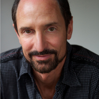
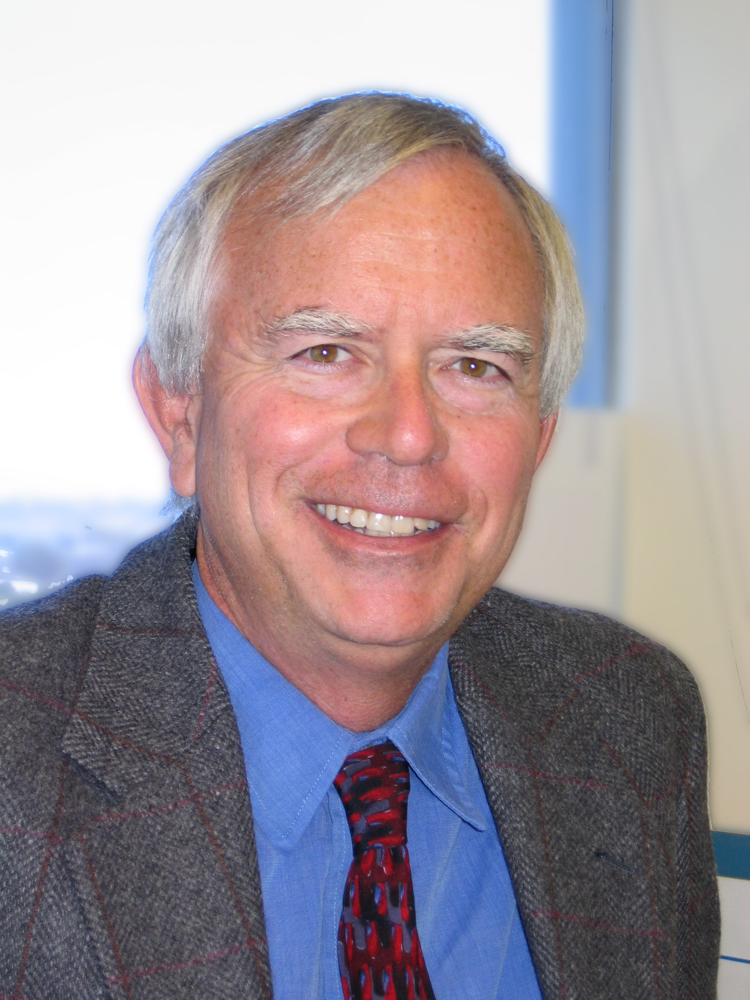

Invited Speakers
- Dr. Brian Gaines
- Dr. Richard Benjamins
- Dr. James Fan
- Dr. Tom Gruber
- Dr. Bill Swartout
- Dr. Bob Wielinga
|
Dr. Richard Benjamins, Telefónica R&D Tentative title: "Has 'Knowledge' been the driver?" Abstract: In this talk I will review the impact of 25 years of research (which started as "Knowledge Acquisition") on society and industry, especially from a European perspective. I will also revisit the value of knowledge versus data and how that has evolved in the last 25 years. Bio: Dr. V.R. (Richard) Benjamins is Director of User Modelling at Telefónica R&D where he is responsible for customer data intelligence. Previously he was Director of Technological Strategy at the same company which he joined in July 2007. Before joining Telefonica, he was director and board member at Intelligent Software Components (iSOCO), which he co-founded in 1999. Dr. Benjamins has held positions at the Technical University of Madrid, the University of Amsterdam, the University of Sao Paulo, Brazil, the University of Paris-South, France, and the Spanish Artificial Intelligence Research Institute in Barcelona. |

|
Dr. James Fan, IBM Tentative title: "Building Watson – A Brief Overview of DeepQA and the Jeopardy! Challenge" Abstract: A computer system that can answer natural language questions over a broad range of knowledge with high accuracy and confidence has been envisioned by scientists and writers since the advent of computers themselves. Consider, for example, the "Computer" in Star Trek. The DeepQA project at IBM aims to take on this grand challenge by illustrating how the wide and growing accessibility of natural language content and the integration and advancement of Natural Language Processing, Information Retrieval, Machine Learning, Knowledge Representation and Reasoning, and massively parallel computation can drive open-domain automatic Question Answering technology to a point where it clearly and consistently rivals the best human performance. In this talk, we will give an overview of the DeepQA technology and describe how it was used to build Watson, the computer system that won the Jeopardy Man vs. Machine challenge in February 2011. Watson's ability to process and analyze vast amounts of unstructured data has the potential to transform business intelligence, healthcare, customer support, enterprise knowledge management, social computing, science and government. Bio: James Fan is a Research Staff Member at IBM Watson Research Lab in Hawthorne, NY. His research interests include question answering, knowledge representation and reasoning, natural language processing and machine learning. James is currently working on the DeepQA project which is advancing the state-of-the-art in automatic, open domain question answering technology. The DeepQA team is pushing question answering technology to levels of performance previously unseen and demonstrate the technology by playing Jeopardy! at the level of a human champion. James has been working in the area of question answering since 2003, and has published on subjects in knowledge representation, reasoning, natural language processing and machine learning in leading AI journals and conferences. Prior to joining IBM, James received his PhD at the University of Texas at Austin. |
|  |
Dr. Tom Gruber, Co-founder and CTO of Siri Title: "Design for Intelligence: AI and UI and the Intelligent User" Abstract: We can build magnificent machines to search the world's knowledge, play world class chess, win at games shows, and other noble feats of intelligence. But the technology at the interface -- which we all use, every day, all day long -- is still about as smart as a typewriter. This doesn't have to be. We can put intelligence at the interface, treating the human-computer interaction as a domain of expertise. We can build magnificent interfaces to apply the world's knowledge, operate our devices, and mediate our conversations. Call it Design for Intelligence - at the interface. This talk is a retrospective of attempts to put intelligence at the interface, through design and technology. We will follow a connection thread from communication prosthesis to knowledge acquisition to collaborative knowledge sharing to collective knowledge systems to virtual assistants. We will look for sources of success and failure. And we will have fun. Bio: Tom Gruber is a researcher, inventor, and serial entrepreneur, with a focus on technology to augment human intelligence. His research at Stanford in Artificial Intelligence, particularly ontology engineering, helped lay the groundwork for semantic information sharing and the Semantic Web. He invented HyperMail, the widely used open-source application that turns email conversations into collective memories on the Web. He has cofounded and confounded startups that created - a Collaborative Knowledge Management system for enterprises (Intraspect) - a Collective Knowledge System for travelers (RealTravel.com) - a Virtual Personal Assistant for the Internet (Siri.com) |
|  |
Dr. Bill Swartout, Director of Technology for USC's Institute for Creative Technologies Title: "Let Me Tell You a Story…." Abstract: Stories are a fundamental means through which we learn and share experiences. At the USC Institute for Creative Technologies, stories are the backbone behind a wide variety of simulated experiences that we create to educate and train skills in leadership, negotiation, cultural awareness and negotiation. These experiences range from filmed dramatizations of case studies to fully interactive experiences with virtual humans set in virtual worlds. But authoring these stories and constructing the knowledge structures, such as language and dialogue models, needed to support their use in our simulations is a highly labor intensive task. Additionally, it is important to ensure that the stories are authentic and reflect current realities, which may require access to outside subject matter experts if the stories are developed in-house. In this talk I will present work we have been pursuing at the ICT to use data-driven methods to gather stories from the web and other sources and incorporate them into simulations. This work consists of several efforts which taken together, hold the promise of providing more authentic experiences while at the same time reducing the modeling and knowledge base construction effort required to support them. Bio: William Swartout is Director of Technology for USC's Institute for Creative Technologies (ICT) and a research professor of computer science at USC. His particular research interests include virtual humans, explanation and text generation, knowledge acquisition, knowledge representation, intelligent computer based education, and the development of new AI architectures. In 2009, Swartout received the Robert Engelmore Award from the Association for the Advancement of Artificial Intelligence for contributions to knowledge-based systems and explanation, groundbreaking research on virtual human technologies and their applications, and service to the artificial intelligence community. He is a Fellow of the AAAI, has served on their Board of Councilors and is past chair of the Special Interest Group on Artificial Intelligence (SIGART) of the Association for Computing Machinery (ACM). He has served as a member of the Air Force Scientific Advisory Board, the Board on Army Science and Technology of the National Academies and the JFCOM Transformation Advisory Group. He received his Ph.D. and M.S. in computer science from MIT and his bachelor’s degree from Stanford University. |
|
Dr. Bob Wielinga, University of Amsterdam Tentative title: "In pursuit of knowledge: 25 years of knowledge acquisition" Bob J. Wielinga (1945) studied physics at the university of Amsterdam, where he was awarded a Ph.D. degree cum laude in 1972 for a thesis in nuclear physics. Subsequently, Wielinga was responsible for the design and construction of a large computer control system for a linear accelerator at the Institute for Nuclear Physics in Amsterdam. In 1974, Wielinga became senior research officer at the Department of Computer Science of the University of Essex. Until 1977, where he was involved in research in Artificial Intelligence, in particular in the area of knowledge representation for a computer vision system. In 1977, Wielinga was appointed senior lecturer at the Department of Psychology of the Universiteit van Amsterdam, working in the area of cognitive models of problem solving. Since 1983, Wielinga has performed research on the methodology of knowledge-based system design and knowledge acquisition. In 1986, Wielinga was appointed full professor of Social Science Informatics in the Faculty of Psychology, and established a department with the same name, which was later (2004) renamed Human Computer Studies in the Faculty of Science at the Universiteit van Amsterdam. As such he has been leader of a group of over 25 researchers working in the areas of knowledge technology and ontologies, e-learning, multi-agent systems, human-system interaction, machine learning and social aspects of information technology. Since 2009, Wielinga is also part time visiting professor of the Vrije Universiteit Amsterdam in the Web and Media group. Wielinga has published over 250 scientific papers, supervised more than 40 PhD students and participated in more than 30 Dutch and European projects. He was one of the main contributors to the development of the KADS methodology for knowledge based system development. Wielinga is a fellow of the European Coordinating Committee of Artificial Intelligence (ECCAI). |